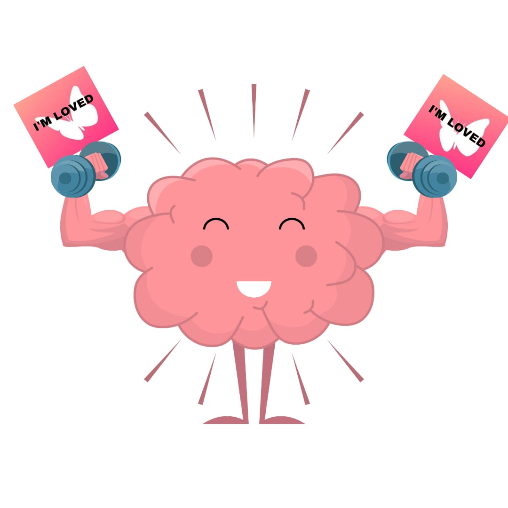
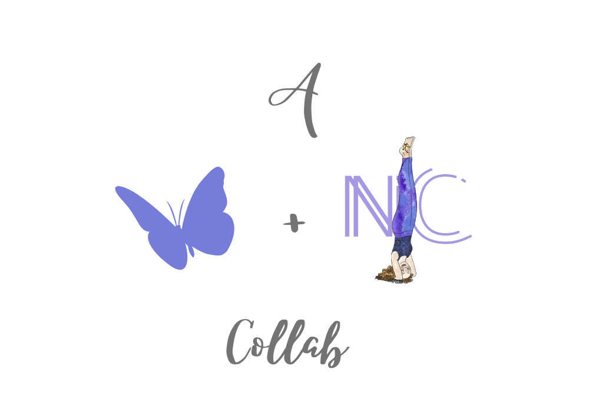

Las afirmaciones son una herramienta que ayuda a cambiar nuestra percepción de los pensamientos/sentimientos negativos a positivos. Piensa en las afirmaciones como si fueran pesas que tonifican los músculos de nuestro cerebro y ayudan a mantener la mente en forma. Cuanto más las utilicemos, más podremos ver los buenos resultados en nuestras vidas.
Muchas veces, nuestros pensamientos no son agradables. Podemos pensar lo peor de nosotros mismos en el trabajo, en una relación, en nuestros sueños creativos e incluso en nosotros mismos. Cuando llegamos a la edad adulta, puede ser un reto cambiar nuestra mentalidad para experimentar una vida equilibrada y no afectar a nuestra salud mental. Las afirmaciones pueden ayudar a aliviar el caos interno. No significa que los retos vayan a desaparecer, pero podemos desarrollar la alineación interna y el valor para afrontar nuestros días oscuros y crecer a partir de ellos.
 Afirma: Soy perfecto/a, soy completo/a, soy amado/a; mi cuerpo es amado.Las afirmaciones diarias pueden inspirarnos y motivarnos para seguir avanzando en nuestro camino. Nos ayudan a ponernos en forma mentalmente, a desarrollar los músculos del cerebro que producen energía positiva, permitiendo así que nuestro corazón se llene de esperanzas.
Afirma: "Estoy divinamente guiado/a y protegido/a en todo momento.
¿Cómo usar las afirmaciones?
Escribir afirmaciones no tiene por qué ser un proceso difícil. Una de las mejores maneras es encontrar un espacio tranquilo y favorito donde pueda concentrarse en crear estas afirmaciones que mejorarán su vida. Mientras haces tus afirmaciones, piensa en los pensamientos negativos que afectan a tu vida diaria, y escribe el opuesto positivo que contrarreste esa creencia. Por ejemplo, si piensas "soy feo/a y no tengo éxito", escribe una afirmación como ésta "Soy hermoso/a y tengo éxito.
Haz que tus afirmaciones sean cortas y fáciles de recordar. Recuerda que las afirmaciones cortas pueden ser tan poderosas como las largas. Comience sus afirmaciones con "Yo soy", "Yo tengo" o "Mi". Con esta poderosa afirmación, está declarando al Universo/Dios quién ES USTED. Escribe tus afirmaciones en tiempo presente, como si estuvieras experimentando lo que afirmas y deseas como si ocurriera en el AHORA, no en el futuro desconocido. Por ejemplo, "veo mi propio valor" es mejor que "veré mi propio valor".
Afirma: "Todo está funcionando para mi mayor bien".
No empieces tus afirmaciones con "necesito" o "quiero", ya que esto muestra carencia, en cambio escribe tus afirmaciones con un sentido de gratitud y sabiendo que ya lo tienes y que lo que deseas se te ha dado. Mientras afirmas, siente las palabras como verdaderas, siente las emociones detrás de la afirmación, y cree que tu deseo se manifestará, cuando PIDES, te es DADO.
Afirma: "Confío en el proceso de la vida".
¿Por qué usar Creer?
 Construye una mente positiva utilizando Creer diariamente.
Construye una mente positiva utilizando Creer diariamente.
Believe fue creada como una forma fácil de cambiar tu patrón de pensamiento negativo por uno positivo. Esta aplicación móvil te ayudará a recordar lo verdaderamente único/a y especial que eres, y que eres un alma poderosa con poderes infinitos. Con la ayuda de poderosas afirmaciones que te llegan cada día a través de notificaciones push, podrás disfrutar de un día lleno de felicidad, positivismo y bondad. Creer fue creada con amor, con el objetivo de ayudar a las personas en su vida diaria, si la aplicación puede hacer sonreír a una sola persona a lo largo del día, valió la pena.
